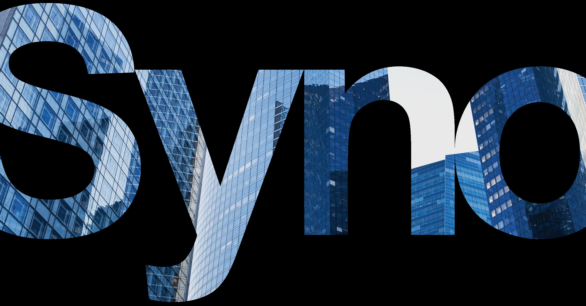

CLI Administrator Guide for
Synology NAS
1
Table of Contents
Chapter 1: Introduction
01
Chapter 2: Synology NAS Administrative Commands
02
Managing local users — synouser
Managing local groups — synogroup
Managing share folder information — synoshare
Managing network settings — synonet
Managing setting of services — synoservice
Managing workgroup or ADS domain setting — synowin
Chapter 3: Synology Error Numbers
14
Copyright and Disclaimer Notices
18
THIS DOCUMENT CONTAINS PROPRIETARY TECHNICAL
INFORMATION WHICH IS THE PROPERTY OF SYNOLOGY
INCORPORATED AND SHALL NOT BE REPRODUCED, COPIED,
OR USED AS THE BASIS FOR DESIGN, MANUFACTURING, OR
SALE OF APPARATUS WITHOUT WRITTEN PERMISSION OF
SYNOLOGY INCORPORATED.
Chapter 1: Introduction
Chapter 1: Introduction
This guide contains command tools that allow your applications to make use of the resources
on Synology DiskStation and also includes a list of Synology Error Numbers for reference.
01
Chapter 2: Synology NAS Administrative Commands
Chapter 2: Synology NAS Administrative
Commands
Managing local users — synouser
Synopsis
synouser {--help}
synouser {--add} username passwd full name expired email app privilege
synouser {--del} username...
synouser {--rename} old username new username
synouser {--modify} username passwd full name expired email
Description
--add
Create one local user at a time.
Delete existing local user with the username. A system, admin, and
--del
guest account cannot be deleted.
Rename a local user account from the old username to a new
username. The new account name can not be renamed if it has
--rename
already existed in the DiskStation. A system, admin, and guest
account can not be renamed.
--modify
Modify the information of a local user account username.
The format or limitation of each argument is discussed in Restrictions. Only the super-user is
permitted to run this utility.
02
Chapter 2: Synology NAS Administrative Commands
Restrictions
The user name is not case sensitive and limited from 1 to 64 UTF-8
characters, excluding the following symbols: ! " # $ % & ' ( ) * + , / : ; <
= > ? @ [ ] \ ^ ` { } | ˜
username
Note:
• The first character cannot be a minus sign or a space, and the last
character cannot be a space.
The password is case sensitive and limited up to 127 displayable
characters, including letters, numbers, signs, and space.
passwd
Note:
• You may choose a blank password or customize your own
password, which will be encrypted before being stored in the user
database.
The user description can include up to 64 displayable UTF-8
full_name
characters. This field may be left empty.
It could be an expired account or not. You should specify 0 for an
expired
unexpired account and 1 for an expired account.
email
The email address of the user. This field may be left empty.
Set a decimal number to assign user's privilege to access
applications. You may choose 0 to prevent users from accessing any
applications or choose a number constructed from the sum of the
following values:
• FTP Value 0x01
• File Station Value 0x02
app_privilege
• Audio Station Value 0x04
• Download Station Value 0x08
For example, the value of a user's privilege who is able to access FTP,
Audio Station, and Surveillance Station is 21 (21 = 0x15 = 0x01 + 0x04
+ 0x10).
03
Chapter 2: Synology NAS Administrative Commands
Exit Status
The synouser utility returns 0 when exits successfully, or >0 if any error occurs.
Limitation
When user is created, no welcome email will be sent.
Examples
The following example shows how to change the admin password to "1".
Example - Set admin's password
DiskStation> /usr/syno/sbin/synouser --setpw admin 1
Create user syno with password '1' and full name 'Synology Inc.'. Applications that this user can
access are FTP, File Station, Audio Station, Download Station, and Surveillance Station.
Example - Create user syno
DiskStation> /usr/syno/sbin/synouser --add syno 1 "Synology Inc." 0
synology@example.com 31
04
Chapter 2: Synology NAS Administrative Commands
Managing local groups — synogroup
Synopsis
synogroup {--help}
synogroup {--add} groupname username...
synogroup {--del] groupname...
synogroup {--rename} old_groupname new_groupname
synogroup {--member} groupname username...
Description
Create one local group at a time. The username will be added to the
--add
newly created group named groupname.
Delete existing local group groupname. System group users can not
--del
be deleted.
Rename a local group from old_groupname to new_groupname. The
--rename
new_groupname can not be renamed if it has already existed in the
DiskStation. System group users can not be renamed.
Modify the member list of a local group groupname to the username
--member
list.
The format or limitation of each argument is discussed in Restrictions. Only the super-user is
permitted to run this utility.
Restrictions
The group name is not case sensitive and limited from 1 to 15 UTF-8
characters, excluding the following symbols: ! " # $ % & ’ ( ) * + , / : ; <
= > ? @ [ ] n ˆ ` { } | ˜
groupname
Note:
• The first character cannot be a minus sign or space, and the last
character cannot be a space.
Exit Status
The synogroup utility returns 0 when exits successfully, or >0 if any error occurs.
05
Chapter 2: Synology NAS Administrative Commands
Managing share folder information — synoshare
Synopsis
synoshare {--help}
synoshare {--add} sharename share_desc share_path user_list_na user_list_rw user_list_ro
share_browsable adv_privilege
synoshare {--del] {TRUE | FALSE} sharename...
synoshare {--rename} old_sharename new_sharename
synoshare {--setuser} sharename {NA | RO | RW} {+ | - | =} user_list
Description
--add
Create a new share named sharename.
Delete the share folder, sharename. --del must follow by a boolean
value. TRUE, synoshare will delete all the configurations and data of
this share. FALSE, it will only delete the configurations of this share,
user will still have to remove this directory from file system manually,
otherwise DiskStation will restore share with the default privilege
--del
next time it restarts.
Note:
• This command can only be used to delete normal shared folders,
and cannot be used to delete Hybrid Share folders.
Rename a share folder from old_sharename to new_sharename. The
--rename
new_sharename can not be renamed if it has already existed in the
DiskStation.
Modify the list of access privilege to the share folder, sharename.
The third parameter is the user list of access privilege which will be
modified.
• NA Modify the list of no access privilege.
• RO Modify the list of read-only privilege.
--setuser
• RW modify the list of read/write privilege.
The fourth parameter is the action to the user list of access privilege.
+ Append the user_list to the original user list of access privilege
- Remove the user_list from the original user list of access privilege
= Replace the original user list of access privilege with the new user_
list.
The format or limitation of each argument is discussed in Restrictions. Only the super-user is
permitted to run this utility.
06
Chapter 2: Synology NAS Administrative Commands
Restrictions
The shared folder names are not case sensitive and limited from 1 to
32 UTF-8 characters, excluding the following symbols: ! " # $ % & ’ ( ) *
+ , / : ; <= > ? @ [ ] n ˆ ` { } | ˜
The first character of a shared folder name cannot be a minus sign or
a space, and the last character cannot be a space character either.
Shared folder names in the following are reserved for system use
only:
• global
• homes
sharename
• home
• printers
• .
• ..
• surveillance
• usbbackup
• usbshare
• esatashare
The shared folder description is case sensitive and limited up to 64
share_description
displayable Unicode characters. It can be an empty string.
It has to be a valid directory to the shared folder. If the path is not
share_path
existed, synoshare will create it automatically.
Separate each username with a comma, ",". It allows a groupname,
but please add "@" in front of a groupname. There will be an error if
user_list
either username or groupname does not exist.
Ex. 'user1,user2,@group3'
1, show a shared folder in "My Network Places." 0, hide a shared
folder in "My Network Places."
Hiding a shared folder in "My Network Places" does not affect its
share_browsable
access right. The access right of the hidden shared folder will remain
unchanged. Users who have the proper access rights to the shared
folder can still access it by entering "\\server name\shared folder
name".
07
Chapter 2: Synology NAS Administrative Commands
Configure the advanced privileges of the shared folder. When
accessing this folder with FTP or File Station, the following settings
will be applied in addition to the current shared folder privileges.
You should specify this value in decimal. You may choose 0 or a
adv privilege
number constructed from the sum of the following values:
• Disable directory browsing Value: 0x1
• Disable modification of existing files Value: 0x2
• Disable file downloading Value: 0x4
Exit Status
The synoshare utility returns 0 when exits successfully, or >0 if any error occurs.
Examples
Create share 'private' with empty access list.
Example - Create Share 'private'
DiskStation> /usr/syno/sbin/synoshare --add private "Comment" /volume1/
private "" "" "" 1 0
Add user syno and group stuff with read/write permission in share 'private'.
Example - Add User to Share Access Control List
DiskStation> /usr/syno/sbin/synoshare --setuser private RW + syno,@stuff
08
Chapter 2: Synology NAS Administrative Commands
Managing network settings — synonet
Synopsis
synonet {--help}
synonet {--dhcp} iface
synonet {--manual} iface ip mask [--dont restart service]
synonet {--set_gateway} gateway
synonet {--set_dns} dns
synonet {--set_mtu} iface MTU
synonet {--set_hostname} hostname [--dont restart service]
Description
--dhcp
Set network adapter and iface to DHCP.
Set network adapter and iface to Manual IP followed by two
--manual
parameters: IP and mask.
Manually assign default gateway when all the network adapters are
--set_gateway
set to Manual IP.
Manually assign DNS server when all the network adapters are set to
--set_dns
Manual IP.
Set the MTU value of the network adapter. The default value is 1500.
--set_mtu
The MTU will only take effect when the DiskStation is connected to
Gigabits network.
--set_hostname
Modify the server name on the DiskStation.
The format or limitation of each argument is discussed in Restrictions. Only the super-user is
permitted to run this utility.
Restrictions
It is limited to the following two strings only:
iface
• eth0
• eth1 (Only supported on DiskStation with two LAN ports)
ip, mask,
The inputs should be in the format of IPv4.
gateway, dns
The server name is not case sensitive and limited from 1 to 15
hostname
displayable characters, which may consist of letters, numbers,
underscores, and minus signs. The first character must be a letter.
09
Chapter 2: Synology NAS Administrative Commands
It is limited to the following values only:
• 1500
• 2000
• 3000
• 4000
MTU
• 5000
• 6000
• 7000
• 8000
• 9000
Exit Status
The synonet utility returns 0 when exits successfully, and >0 if any error occurs.
Examples
The below example will show you how to manually assign eth0 with the following information:
IP: 192.168.14.64
Netmask: 255.255.0.0
Default gateway: 192.168.15.254
DNS server: 192.168.252.254
Example - Set DiskStation to Manual IP
DiskStation> /usr/syno/sbin/synonet --manual eth0 192.168.14.64 255.255.0.0
DiskStation> /usr/syno/sbin/synonet --set_gateway 192.168.15.254
DiskStation> /usr/syno/sbin/synonet --set_dns 192.168.252.254
The below example will show you how to set your DiskStation to the new Hostname, cn406e.
Example - Set New Host Name to DiskStation
DiskStation> /usr/syno/sbin/synonet --set_hostname cn406e
10
Chapter 2: Synology NAS Administrative Commands
Managing setting of services — synoservice
Synopsis
synoservice {--help}
synoservice {--list} [running]
synoservice {--enable | --disable} service...
synoservice {--start | --stop | --restart} service...
synoservice {--keyon | --keyoff} service...
synoservice {--detail} service...
Description
List of all the available services. It will only list the current running
--list
service if the parameter running is being specified.
Enable or disable the specified service. Not only the specified service
will be saved to the current settings once the service has been
--enable, --disable
enabled or disabled, the service will also be started or stopped
immediately.
Start, stop, or restart the specified service without modifying the
--start, --stop,
settings. Before starting the service, it will check if the service has
--restart
been enabled.
Enable or disable the settings of the specified service. The settings
--keyon, --keyoff
will be saved without interrupting the service.
--detail
Display all the information related to the specific service.
Restrictions
• service The settings of the following services are available to be set up:
• web Web Station
• photo Photo Station
• netbkp Network backup service
• download Download Station
• media DLNA service
• audio Audio Station
• itunes iTunes service
• mysql MySQL service
• printer Printer service
• surveillance Surveillance Station
• userhome User Home Service
• ftp FTP server
11
Chapter 2: Synology NAS Administrative Commands
• telnet Telnet service
• ssh SSH service
• nfs NFS service
• afp Apple File Protocol service
• samba CIFS service
• filestation File Station
• https HTTPS service
Exit Status
The synoservice utility returns 0 when exits successfully, or >0 if any error occurs.
Examples
To enable ssh service
Example - Enable Service 'ssh'
DiskStation> /usr/syno/sbin/synoservice --enable ssh
To enable ssh in ds_configure.sh when group install. Use --keyon instead of --enable, because
the services are not started when ds_configure.sh is called.
Example - Enable Service 'ssh' When Group Install
# ds_configure.sh
# Enable service ssh
/usr/syno/sbin/synoservice --keyon ssh
12
Chapter 2: Synology NAS Administrative Commands
Managing workgroup or ADS domain setting — synowin
Synopsis
synowin {--help}
synowin {--joinWorkgroup} workgroup
synowin {--joinDomai} {short_domain_name | full_domain_name} username password [-d
dns_ip] [-i kdc_ip] [-n netbios_name] [-f fqdn_name]
Description
--joinWorkgroup
Join workgroup. It will omit the ADS domain.
Join ADS domain. User will have to provide the account with Domain
--joinDomain
Administrator's privilege.
Restrictions
The name of a Workgroup can contain 1 to 15 characters. Invalid
characters include: [ ] ; : " < > * + = n / | ? ,
workgroup
Note:
• If your workgroup name includes the character '&', users of Mac OS
10.4.4 or earlier versions will not be able to connect to DiskStation
via samba.
If the input domain contains period, ”synology.com”, it will be treated
domain_name
as full domain name. If it is "synology", it will be treated as short
domain name.
The DC (Domain Controller) IP.
Specify a DC IP and DiskStation will try to communicate with it. If
kdc_ip
there is more than one IP, insert a comma in between each of them.
Add an asterisk (*) after the last DC IP if you wish, and DiskStation will
try to communicate with other DC when all specified ones failed. You
will need to add a comma between the asterisk and the last IP.
netbios_name
The NetBIOS name of the domain.
fqdn_name
The FQDN (DNS name) of the domain.
Exit Status
The synowin utility returns 0 when exits successfully, or >0 if any error occurs.
13
Chapter 3: Synology Error Numbers
Chapter 3: Synology Error Numbers
Table 1: List of Synology Error Numbers
Symbol
Value
Description
ERR SUCCESS
0x0000
The operation was successful.
ERR NOT ENOUGH MEMORY
0x0100
Insufficient memory allocation.
The operation ran out of the
ERR OUT OF MEMORY
0x0200
memory.
ERR ACCESS DENIED
0x0300
Access is denied.
ERR LOCK FAILED
0x0400
Unable to lock a file.
ERR UNLOCK FAILED
0x0500
Unable to unlock a file.
ERR PATH NOT FOUND
0x0600
The path not found.
ERR FILE NOT FOUND
0x0700
The file not found.
ERR FILE EXISTS
0x0800
The file already exists.
ERR OPEN FAILED
0x0900
Failed to open the file.
Failed to read data from the
ERR READ FAILED
0x0A00
specified device.
Failed to write data to the specified
ERR WRITE FAILED
0x0B00
device.
ERR CREATE FAILED
0x0C00
Failed to create file or directory.
ERR BAD PARAMETERS
0x0D00
The parameters are invalid.
ERR INVALID SERVERNAME
0x0E00
The server name is invalid.
ERR INVALID DOMAINNAME
0x0F00
The domain name is invalid.
ERR INVALID NETNAME
0x1000
The format of IP address is invalid.
Failed to locate Windows domain
ERR SERVER UNREACHABLE
0x1100
controller.
ERR INVALID SHARENAME
0x1200
The share name is invalid.
ERR SHARE EXISTS
0x1300
The share is already existed.
ERR NO SUCH SHARE
0x1400
The share does not exist.
The maximum number of share
ERR TOO MANY SHARES
0x1500
has been exceeded.
ERR INVALID GROUPNAME
0x1600
The group name is invalid.
ERR GROUP EXISTS
0x1700
The group name is already existed.
ERR NO SUCH GROUP
0x1800
The group does not exist.
The maximum number of group
ERR TOO MANY GROUPS
0x1900
has been exceeded.
ERR INVALID USERNAME
0x1A00
The user name is invalid.
The format of the password is
ERR INVALID PASSWORDNAME
0x1B00
invalid.
ERR USER EXISTS
0x1C00
The user exists.
ERR NO SUCH USER
0x1D00
The user does not exist.
ERR WRONG PASSWORD
0x1E00
The password is incorrect.
The maximum number of user has
ERR TOO MANY USERS
0x1F00
been exceeded.
Failed to find the specified
ERR KEY NOT FOUND
0x2000
keyword.
The specified keyword is already
ERR KEY EXISTS
0x2100
existed.
ERR SECTION NOT FOUND
0x2200
Failed to find the section.
ERR SECTION EXISTS
0x2300
The section is already existed.
Insufficient space with the user's
ERR NOT ENOUGH QUOTA
0x2400
quota.
Insufficient free space in the
ERR NOT ENOUGH VOLUME SPACE
0x2500
volume.
ERR SEEK FAILED
0x2600
Seek operation is failed.
ERR STAT FAILED
0x2700
Stat operation is failed.
14
Chapter 3: Synology Error Numbers
Symbol
Value
Description
ERR RENAME FAILED
0x2800
Failed to rename.
Insufficient free space in the file
ERR NOT ENOUGH SPACE
0x2900
system.
Failed to execute the specified
ERR OP FAILURE
0x2A00
operation.
ERR DEV UNCONFIG
0x2B00
The device is not ready.
ERR DEV UNMOUNTED
0x2C00
The device is not mounted.
ERR OP UNREGISTERED
0x2D00
The operation is not allowed.
ERR TIMER EXPIRED
0x2E00
The timer has expired.
ERR USER BATCH CONFLICT
0x2F00
Duplicated names found.
Failed to read geometry from the
ERR READ GEO
0x3000
specified (disk) device.
ERR USAGE
0x3100
Invalid usage of parameters.
Illegal offset found while verifying
ERR UPDATE OFFSET
0x3200
the checksum of patch files.
ERR CHECKSUM
0x3300
Illegal checksum (of a patch file).
ERR OPEN RAWDEVICE
0x3400
Failed to open the raw device.
Failed to open the configuration
ERR OPEN OPTFILE
0x3500
file of installation.
Failed to read data from the raw
ERR READ RAWDEVICE
0x3600
device.
Failed to write data to the raw
ERR WRITE RAWDEVICE
0x3700
device.
ERR BADPATCH
0x3800
Illegal patch file.
ERR REMOVE FAILED
0x3900
Failed to remove file.
ERR MOVE FAILED
0x3A00
Failed to move file.
ERR COPY FAILED
0x3B00
Failed to copy file.
ERR MKDIR FAILED
0x3C00
Failed to create directory.
ERR MMAP FAILED
0x3D00
Failed to map file to memory.
ERR FORMAT ERROR
0x4000
Failed to make file system.
ERR NO BACKUP SET
0x5000
The backup set does not exist.
The dest ID in local (/etc/
ERR NO DEST ID
0x5100
synolocalbkp.conf) does not exist.
Fail to get backup info in the
ERR BACKUP INFO FAIL
0x5200
shared memory.
The format of local backup
ERR BAD DEST PATH
0x5300
destination is invalid.
Failed to remove the shared
ERR RM SHM FAIL
0x5400
memory ID.
ERR EXPORT APPLICATION
0x5500
Failed to export application.
ERR IMPORT APPLICATION
0x5600
Failed to import application.
ERR NO VOLUME ID
0x6000
The volume ID cannot be found.
ERR NO DISK ID
0x6100
The disk ID cannot be found.
ERR NOT ENOUGH SD
0x6200
Insufficient hard disks.
The selected hard disks do not
ERR SD SIZE NOT ALIGN
0x6300
have the same capacity.
Failed to destroy the volume,
ERR DEVICE BUSY
0x6400
because it is occupied by someone.
ERR INVALID SD
0x6500
Invalid SD.
ERR FORMAT FAIL
0x6600
Failed to reformat the disk.
ERR CANNOT REBUILD DISK
0x6700
Failed to rebuild the disk.
ERR BROKEN RAID CONF
0x6800
Incorrect RAID information.
The capacity of the disk is too
ERR DISK TOO SMALL
0x6900
small.
ERR CANNOT GET MNTINFO
0x6A00
Failed to get mount information.
ERR BROKEN DISK INFO
0x6B00
Incorrect disk information.
ERR_DISK_IO_FAILED
0x6C00
Disk I/O fails.
ERR_BAD_DISKSECTOR
0x6D00
Bad sectors found.
ERR_UDPD_INVALID_HANDLE
0x7100
The specified handle is invalid.
ERR_UDPD_RUNNING_HANDLE
0x7200
The specified handle is busy.
ERR_UDPD_INVALID_EVENT
0x7300
The specified event is invalid.
The specified parameters are
ERR_UDPD_INVALID_PARAMETER
0x7400
illegal.
ERR_UDPD_EXIT_ABNORMAL
0x7500
The daemon exits abnormally.
ERR_UDPD_NOT_ENOUGH_SPACE
0x7600
The specified space is not enough.
Time out before receiving complete
ERR_UDPD_TIMEOUT
0x7700
packet.
15
Chapter 3: Synology Error Numbers
Symbol
Value
Description
Failed to initialize the specified
ERR_UDPD_INIT_FAIL
0x7800
handle.
ERR_UDPD_SEND_FAIL
0x7900
Failed to send the specified data.
ERR_UDPD_RECV_FAIL
0x7A00
Failed to receive the specified data.
The specified burn-in function is
ERR_MANUTIL_PERM
0x7B00
invalid.
The error cannot be determined by
ERR_UNKNOWN
0x8000
the function you called.
System encounters an error, but
ERR_SYS_UNKNOWN
0x8100
the function you called can't tell
you the real error.
The specified volume size exceeds
ERR_VOLUME_SIZE_TOO_LARGE
0x8200
the limit.
ERR_VOLUME_NOT_FOUND
0x8300
Failed to find the volume.
ERR_VOLUME_READ_ONLY
0x8400
The volume is read only.
Ypbind occurs error when you join
ERR_YP_BIND
0x9000
NIS domain.
The user has not been specified
ERR_QUOTA_NOT_FOUND
0x9100
with the volume quota.
Either the quota file is corrupted,
ERR_QUOTA_PARAM_INVALID
0x9200
or the command or qouta type is
invalid.
Failed to remount the file system to
ERR_QUOTA_MOUNTING
0x9300
enable user/group quota.
ERR_QUOTA_QUOTACHECK
0x9400
Failed to execute quotacheck.
ERR_QUOTA_QUOTAON
0x9500
Failed to execute quotaon.
ERR_QUOTA_QUOTAOFF
0x9501
Failed to execute quotaoff.
ERR_FORK_FAIL
0x9600
Failed to fork.
Failed to enumerate system RAID
ERR_RAID_ENUM_FAIL
0x9700
devices.
ERR_ENUM_FAIL
0x9800
Failed to enumerate.
ERR_INVALID_PATHNAME
0x9900
Invalid volume path.
ERR_SERVICE_EXISTS
0xA000
The service is already existed.
ERR_SERVICE_NOT_EXISTS
0xA100
The service does not exist.
The path you specified is not a
ERR_NOT_DIRECTORY
0xA200
directory.
ERR_DIRECTORY_NOT_EXISTS
0xA300
The directory does not exist.
ERR_SERVICE_NOT_SET
0xA400
The service has not been set.
The path you specified is a
ERR_IS_DIRECTORY
0xA500
directory.
Source and destination file are
ERR_PATH_CONFLICT
0xA600
identical (same file name or hard
link).
The file size exceeds 4GB in FAT file
ERR_FAT_FILESIZE_TOO_LARGE
0xA700
system.
The file contains illeagle char in FAT
ERR_FAT_FILENAME_ILLEGAL
0xA800
file system.
ERR_USER_CANCEL
0xA900
Action cancelled by user .
ERR_INTERRUPTED
0xAA00
Interrupted by a signal.
Share Encryption: Incorrect
ERR_ENCKEY_VERIFY
0xAB00
encryption key.
Share Encryption: Local copy of
ERR_ENCKEY_LOST
0xAC00
encryption key lost.
ERR_BDB_FILE_DEPRECATED
0xB000
The BDb file has been deprecated.
The file opened for BDb is
ERR_BDB_FILE_BAD_FORMAT
0xB100
incorrectly formatted.
ERR_BDB_GET_FAILED
0xB200
The BDb get failed.
ERR_BDB_SET_FAILED
0xB300
The BDb set failed.
ERR_BDB_DELETE_FAILED
0xB400
The BDb delete failed.
ERR_BDB_CURSOR_FINISH
0xB500
The BDb CursorGet has finished.
ERR_NO_SUCH_FTYPE
0xB600
No scuh fType value.
ERR_RESERVED_GROUP
0xB700
The gid is less than GID_MIN.
ERR_RESERVED_USER
0xB800
The uid is less than UID_MIN.
wbinfo -g timeout when building
ERR_LOOKUP_DOMAIN_GROUP
0xB900
domain group db
16
Chapter 3: Synology Error Numbers
Symbol
Value
Description
wbinfo -u timeout when building
ERR_LOOKUP_DOMAIN_USER
0xBA00
domain user db
The specified interface is already
ERR_INTERFACE_EXISTS
0xBB00
existed.
The specified interface does not
ERR_NO_SUCH_INTERFACE
0xBC00
exist.
The interfaces exceeds the
ERR_TOO_MANY_INTERFACE
0xBD00
limitation.
ERR_INVALID_PATH
0xBE00
Invalide path.
The capacity of the disk is too
ERR_SIZE_TOO_SMALL
0xBF00
small.
ERR_NAME_EXISTS
0xC000
The name is already existed.
The reserved size of iSCSI file
ERR_EXCEED_ISCSI_SIZE_IN_VOLUME
0xC100
exceeds the limit.
ERR_FS_NOT_FOUND
0xC200
Failed to find the file system.
ERR_NAME_TOO_LONG
0xC300
File name is too long.
17
Copyright and Disclaimer Notices
Copyright and Disclaimer Notices
Synology Inc.
® 2015-2021 Synology Inc.
All rights reserved.
No part of this publication may be reproduced, stored in a retrieval system, or transmitted,
in any form or by any means, mechanical, electronic, photocopying, recording, or otherwise,
without prior written permission of Synology Inc., with the following exceptions: Any person
is hereby authorized to store documentation on a single computer for personal use only and
to print copies of documentation for personal use provided that the documentation contains
Synology’s copyright notice.
The Synology logo is a trademark of Synology Inc.
No licenses, express or implied, are granted with respect to any of the technology described in
this document. Synology retains all intellectual property rights associated with the technology
described in this document. This document is intended to assist application developers to
develop applications only for Synology-labelled computers.
Every effort has been made to ensure that the information in this document is accurate.
Synology is not responsible for typographical errors.
Synology Inc.
9F, No. 1, Yuandong Rd.
Banqiao Dist., New Taipei City 220632, Taiwan
Synology and the Synology logo are trademarks of Synology Inc., registered in the United
States and other countries.
Marvell is registered trademarks of Marvell Semiconductor, Inc. or its subsidiaries in the United
States and other countries.
Freescale is registered trademarks of Freescale Semiconductor, Inc. or its subsidiaries in the
United States and other countries.
Other products and company names mentioned herein are trademarks of their respective
holders.
Even though Synology has reviewed this document, SYNOLOGY MAKES NO WARRANTY OR
REPRESENTATION, EITHER EXPRESS OR IMPLIED, WITH RESPECT TO THIS DOCUMENT, ITS
QUALITY, ACCURACY, MERCHANTABILITY, OR FITNESS FOR A PARTICULAR PURPOSE. AS A
RESULT, THIS DOCUMENT IS PROVIDED “AS IS,” AND YOU, THE READER, ARE ASSUMING THE
18
Copyright and Disclaimer Notices
ENTIRE RISK AS TO ITS QUALITY AND ACCURACY. IN NO EVENT WILL SYNOLOGY BE LIABLE FOR
DIRECT, INDIRECT, SPECIAL, INCIDENTAL, OR CONSEQUENTIAL DAMAGES RESULTING FROM
ANY DEFECT OR INACCURACY IN THIS DOCUMENT, even if advised of the possibility of such
damages.
THE WARRANTY AND REMEDIES SET FORTH ABOVE ARE EXCLUSIVE AND IN LIEU OF ALL
OTHERS, ORAL OR WRITTEN, EXPRESS OR IMPLIED. No Synology dealer, agent, or employee is
authorized to make any modification, extension, or addition to this warranty.
Some states do not allow the exclusion or limitation of implied warranties or liability for
incidental or consequential damages, so the above limitation or exclusion may not apply to
you. This warranty gives you specific legal rights, and you may also have other rights which
vary from state to state.
19
Copyright and Disclaimer Notices
SYNOLOGY
INC.
9F, No. 1, Yuandong Rd.
Banqiao Dist., New Taipei City 220632
Taiwan
Tel: +886 2 2955 1814
SYNOLOGY
AMERICA CORP.
3535 Factoria Blvd SE, Suite #200,
Bellevue, WA 98006
USA
Tel: +1 425 818 1587
SYNOLOGY
UK LTD.
Unit 5 Danbury Court, Linford Wood,
Milton Keynes, MK14 6PL
United Kingdom
Tel.: +44 (0)1908048029
SYNOLOGY
FRANCE
102 Terrasse Boieldieu (TOUR W)
92800 Puteaux
France
Tel: +33 147 176288
SYNOLOGY
GMBH
Grafenberger Allee 295
40237 Düsseldorf
Deutschland
Tel: +49 211 9666 9666
SYNOLOGY
SHANGHAI
200070, Room 201,
No. 511 Tianmu W. Rd.,
synology.com
Jingan Dist., Shanghai,
China
SYNOLOGY
JAPAN CO., LTD.
Synology may make changes to specifications and product descriptions at any time, without notice. Copyright
© 2021 Synology Inc. All rights reserved. ® Synology and other names of Synology Products are proprietary
4F, No. 3-1-2, Higashikanda,
marks or registered trademarks of Synology Inc. Other products and company names mentioned herein are
Chiyoda-ku, Tokyo, 101-0031
trademarks of their respective holders.
Japan
20
Document Outline